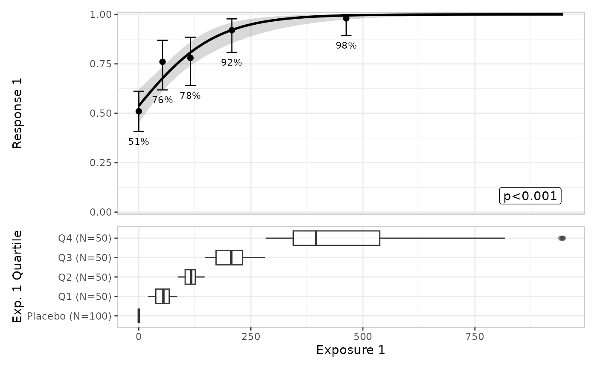
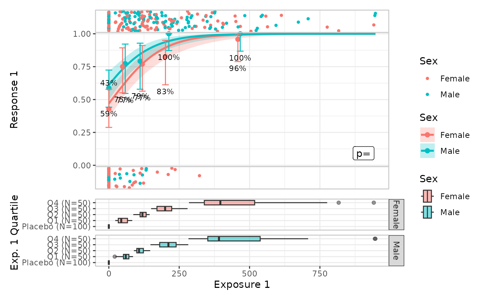
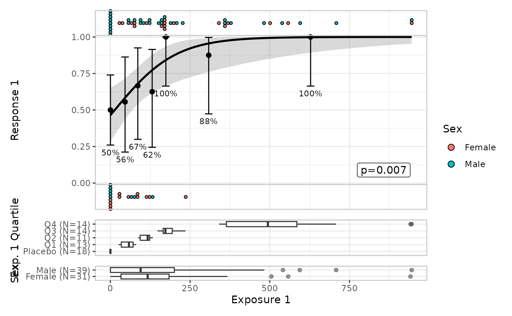

Builds an exposure-response plot for a logistic regression model
Usage
lr_plot(data, exposure, response, color_by = NULL, labels = NULL, ...)
lr_plot_add_model(object, color_by = "inherit")
lr_plot_add_quantiles(
object,
color_by = "inherit",
bins = 4,
conf_level = 0.95
)
lr_plot_add_strips(
object,
color_by = "inherit",
style = "jitter",
panel = "both"
)
lr_plot_add_boxplot(object, boxes_by, color_by = "inherit")Arguments
- data
Observed data
- exposure
Exposure variable (unquoted)
- response
Response variable (unquoted)
- color_by
Stratification variable used for color and fill (unquoted)
- labels
Named list of labels
- ...
Other arguments
- object
Partially constructed plot (has S3 class
erlr_plot)- bins
Number of exposure bins (not counting placebo)
- conf_level
Confidence level for Clopper-Pearson intervals
- style
Character string: "jitter" (the default) or "dotplot"
- panel
Character string: "upper", "lower", or "both" (the default)
- boxes_by
Stratification variable to define groups for boxplots (unquoted)
Examples
lr_data |>
lr_plot(exposure_1, response_1) |>
lr_plot_add_model() |>
lr_plot_add_quantiles() |>
lr_plot_add_boxplot(quartile_1) |>
print()

lr_data |>
lr_plot(exposure_1, response_1, sex) |>
lr_plot_add_model() |>
lr_plot_add_quantiles() |>
lr_plot_add_strips() |>
lr_plot_add_boxplot(quartile_1) |>
print()

lr_data[1:70,] |>
lr_plot(exposure_1, response_1) |>
lr_plot_add_model() |>
lr_plot_add_quantiles(bins = 6) |>
lr_plot_add_strips(sex, style = "dotplot") |>
lr_plot_add_boxplot(quartile_1) |>
lr_plot_add_boxplot(sex) |>
print(box_height = 2)
